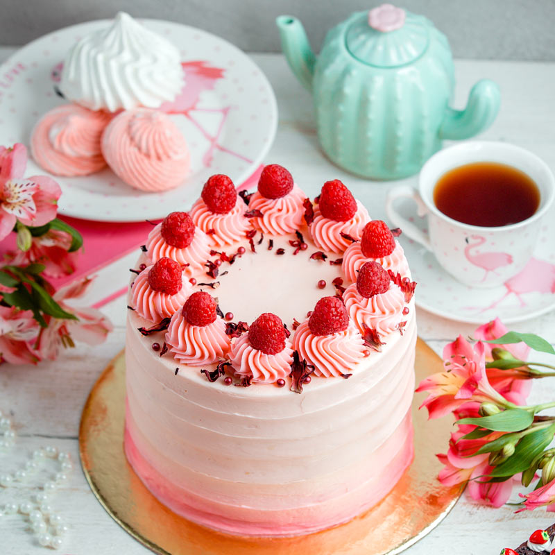
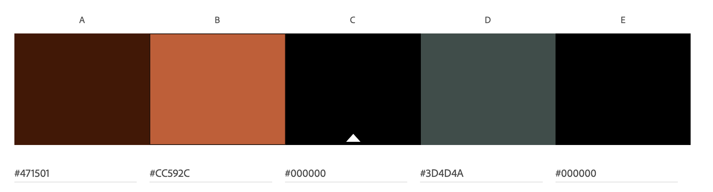

The first production of automobiles was by Carl Benz in 1888 in Germany and, under license from Benz, in France by Emile Roger. There were numerous others, including tricycle builders Rudolf Egg, Edward Butler, and Léon Bollée.
Any two flavours of delicious Kawartha Dairy or Central Smith ice cream with fudge, or caramel or strawberry and cookie crumb filling, decorated just for you.

Strawberry Cake
Layers of sponge cake, meringue, fresh whipping cream and fresh strawberries, decorated with glazed strawberries and chocolate leaves.
Task 3: Complementary Color Scheme 
THIS IS WHY
WE PLAY
2023 - 2024 NBA Season is here, don't loose a game.
Quiz
1.- Which color is often associated with passion and anger?
Red
2.- A _______ color scheme uses variations in lightness and saturation of a single color.
Monochromatic Color Scheme
3.- Which scheme uses three colors evenly spaced around the color wheel?